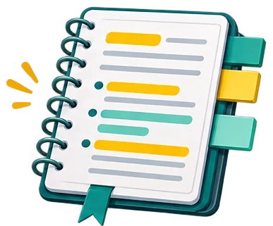
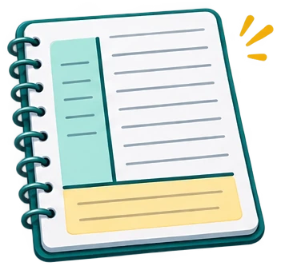
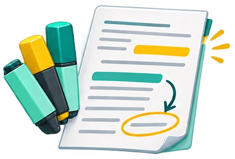
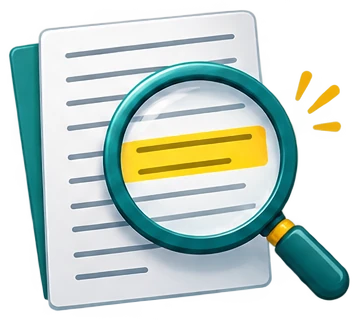
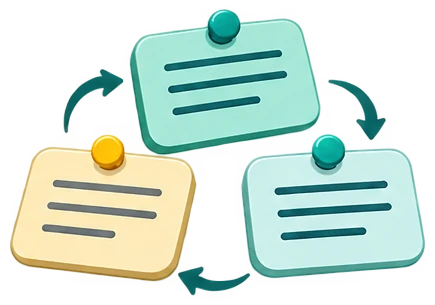

PÚBLICO PRINCIPAL
Estudiantes de 10.º y 11.º
Para quienes toman apuntes en clases, lecturas o exposiciones y quieren aprender a identificar lo importante, organizarlo y explicarlo con sus propias palabras.
Empezar a aprender →¿Tus apuntes son solo una copia del tablero? Aprende a identificar lo importante, organizar tus ideas y estudiar con propósito.
El recurso está pensado principalmente para estudiantes de educación media, pero también ofrece ideas para acompañar el aprendizaje desde el aula.
Para quienes toman apuntes en clases, lecturas o exposiciones y quieren aprender a identificar lo importante, organizarlo y explicarlo con sus propias palabras.
Empezar a aprender →
Para reforzar en el aula la selección de ideas, la síntesis y las técnicas de estudio con ejemplos y actividades interactivas.
Explorar recursos docentes →Avanza por estos momentos, del concepto a la práctica.
Descubre qué son los apuntes efectivos y cómo identificar ideas clave.
Ir a lecciones →02
Explora Cornell, esquemas y mapas mentales antes de practicar.
Ver métodos →03
Usa lo aprendido en ejercicios y actividades interactivas.
Ir a actividades →Haz clic en las tarjetas para descubrir los fundamentos de una toma de apuntes efectiva.
No es necesario anotar cada palabra de la clase: empieza por reconocer la información que verdaderamente te ayuda a comprender.

UNIDAD 2 · SELECCIONARIdea principal: expresa el mensaje central. Idea secundaria: lo explica, amplía o ejemplifica. Palabras clave: son términos que ayudan a recordar lo esencial.
Descubrir técnicas de apuntes →Primero identifica qué vale la pena escribir y por qué.
Por qué copiar todo no basta y cómo usar métodos que ayudan a comprender.
Aprende a reconocer qué es lo central y qué información lo complementa.
¿No aparece el reproductor? Usa «Abrir en YouTube». Los contenidos de aprendizaje y las actividades de la página funcionan aunque no tengas conexión.
Explora tres técnicas para transformar información en apuntes útiles.
Elige un video para conocer ejemplos antes de comenzar los ejercicios.
Mira una explicación del sistema de notas, preguntas y resumen.
Aprende cuándo conviene hacer un esquema y cómo estructurarlo.
Aprende a agrupar conceptos, identificar relaciones y crear mapas útiles.
¿No aparece el reproductor? Usa «Abrir en YouTube». Los contenidos de aprendizaje y las actividades de la página funcionan aunque no tengas conexión.
Lee este texto y selecciona las tres expresiones clave. Luego comprueba tu respuesta.
Selecciona palabras clave, clasifica ideas y transforma textos largos en apuntes que puedas repasar fácilmente.
Mueve el control para comparar la copia literal con un resumen organizado.
En clase se mencionaron muchas ideas, ejemplos y detalles; escribí todas las palabras de la explicación, sin distinguir cuáles eran las más importantes.
Tema: tomar apuntes
Clave 1: seleccionar ideas
Clave 2: organizar información
Resultado: comprender mejor
Resuelve estos ejercicios para aprender a seleccionar, sintetizar y organizar información.

Texto: «Dormir lo suficiente mejora la concentración de los estudiantes. Por ejemplo, descansar bien ayuda a mantener la atención en clase y a recordar información al estudiar».
Tema: ¿Cómo se produce la lluvia? Construye un esquema lógico con las tres fichas.
«Los árboles absorben dióxido de carbono, liberan oxígeno y proporcionan refugio a diversas especies. Por eso, tienen un papel importante en el equilibrio ambiental».
Responde diez preguntas sobre las tres unidades. Al terminar recibirás una calificación de 0 a 5 y una explicación de cada respuesta.
Recibe una nota de 0 a 5, descubre qué acertaste y lee por qué cada respuesta es correcta.
Ideas sencillas para integrar este recurso en el aula.
Usa estas orientaciones antes, durante y después de la experiencia para promover la selección y síntesis de información.
Invita a los estudiantes a explicar cómo toman apuntes y qué dificultades encuentran.
Guía la selección de ideas principales y permite comparar distintas formas de organizar información.
Pide producir apuntes propios de una lectura y reflexionar sobre la técnica elegida.
Valora la selección, organización y síntesis, más allá de la cantidad de texto escrito.
Un recurso multimedia educativo desarrollado por estudiantes de Licenciatura en Informática de la Universidad de Córdoba.
Facultad de Educación y Ciencias Humanas · Montería, Córdoba · Colombia
Asignatura: Producción Multimedia
Integrante del proyecto
Integrante del proyecto
Integrante del proyecto
Integrante del proyecto
Buscamos ayudar a los estudiantes a pasar de copiar literalmente a seleccionar, organizar y sintetizar las ideas importantes mediante actividades interactivas y técnicas de toma de apuntes.
Volver al inicio →Ilustraciones educativas originales integradas y almacenadas localmente para que el recurso funcione sin conexión.